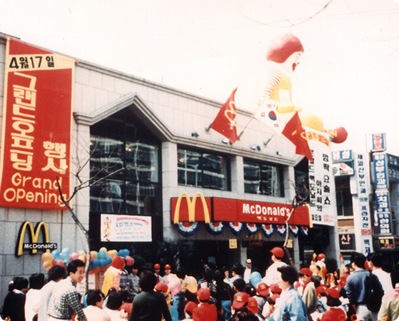

세계 1위의 푸드서비스 기업, 맥도날드
전세계 120개국 3만 7천여 개의 매장에서 매일 6,900만명의 고객들에게 제품과 서비스를 제공하고 있는 맥도날드는 전세계인들이 사랑하는
퀵 서비스 레스토랑(QSR, Quick Service Restaurant)이자 세계 1위의 푸드서비스 기업으로, 고객에게 더 나은 경험을 제공함으로써
'고객이 가장 좋아하는 장소이자 음식을 즐기는 최고의 방법(Our Customer’s Favorite Place and Way to Eat)'이 되기 위해 노력하고 있습니다.
한국 맥도날드의 첫 걸음
-
 1988 서울 올림픽을 개최하며 서울이 세계 속에
1988 서울 올림픽을 개최하며 서울이 세계 속에
우뚝 섰던 그때의 감동을 기억하십니까?159개국의 83,190명의 선수가 참가한 1988 서울 올림픽과 함께 맥도날드가
한국을 찾아왔습니다. 이후 맥도날드는 빅맥, 후렌치 후라이 그리고 해피밀과 같이
세계적으로 유명한 메뉴를 선보이며 한국 소비자들이 선호하는 즐거운 외식 공간으로
사랑을 받고 있습니다. -

한국 첫 맥도날드 매장, 압구정점 그랜드 오프닝
맥도날드는 가장 트렌디한 장소로 떠오르는 압구정동에 첫 레스토랑을 열었습니다.
수백 명의 고객들이 레스토랑 앞에 길게 줄을 늘어서며 맥도날드의 성공적인 시작을
함께 축하했고 이를 통해 맥도날드가 한국 시장에서 지속적으로 성장할 수 있다는
잠재력을 보여 주었습니다. -
 우리는 계속해서 나아갑니다.
우리는 계속해서 나아갑니다.
맥도날드는 지난 31년 동안 국내 협력 업체와 긴밀하게 일하고, 현재 15,000여명의
직원이 근무하는 등 한국 사회의 고용 창출에 기여하고 있습니다. 또한, 30여개 이상의
국내외 비즈니스를 지원해 왔습니다. 맥도날드는 좋은 품질의 제품을 합리적인 가격과
최상의 서비스 제공을 통해 고객이 가장 선호하는 장소로 거듭나기 위해 지속적으로
노력할 것입니다.